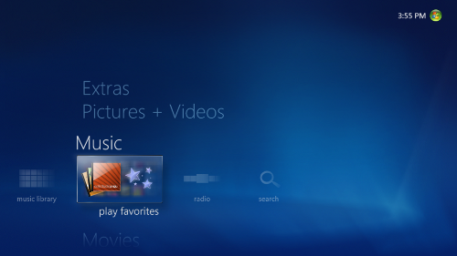
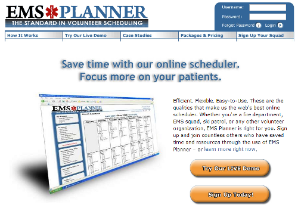

Highlight Hunter, CEO & Engineer, Jan 2011 – Present
A desktop app that helps camera owners quickly find the highlights in their videos and share them with friends
Windows Media Center, Program Manager, Sep 2006 – May 2009
A digital video recorder and media player for Microsoft Windows 7

click for more information
click for more information
EMS Planner, Co-Founder & President of Product Engineering, Oct 2004 – Oct 2008
An online service that helps emergency medical service squads and fire departments plan and manage their shift schedules

click for more information
click for more information